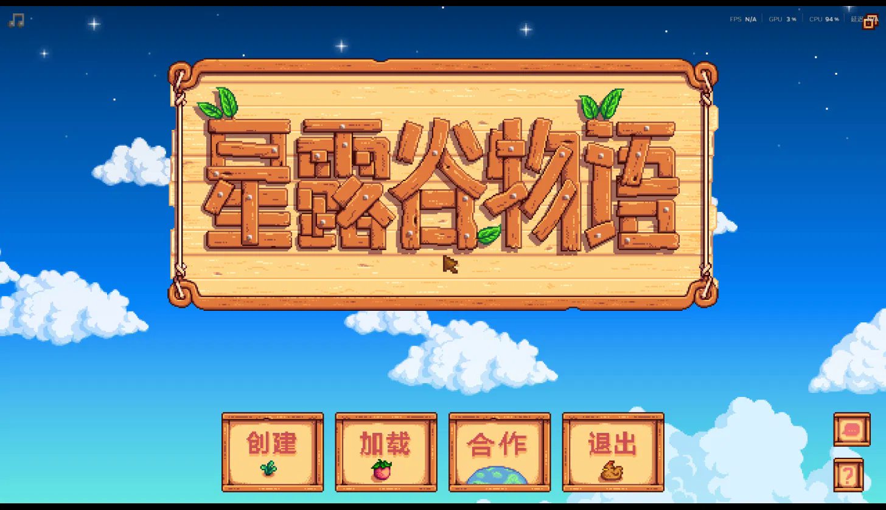
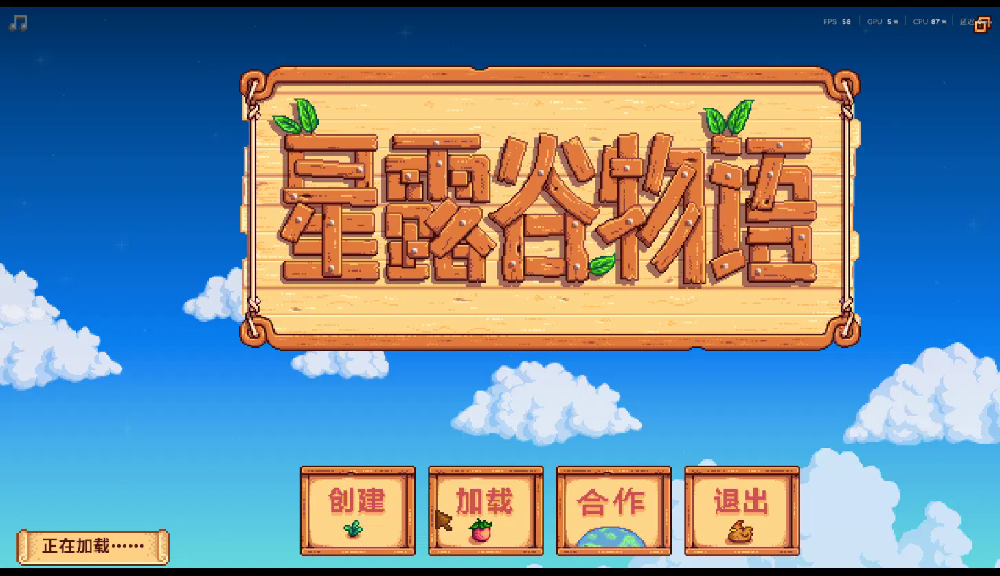
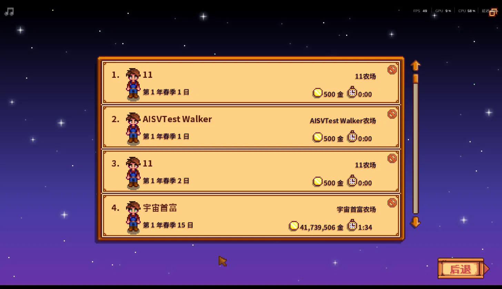
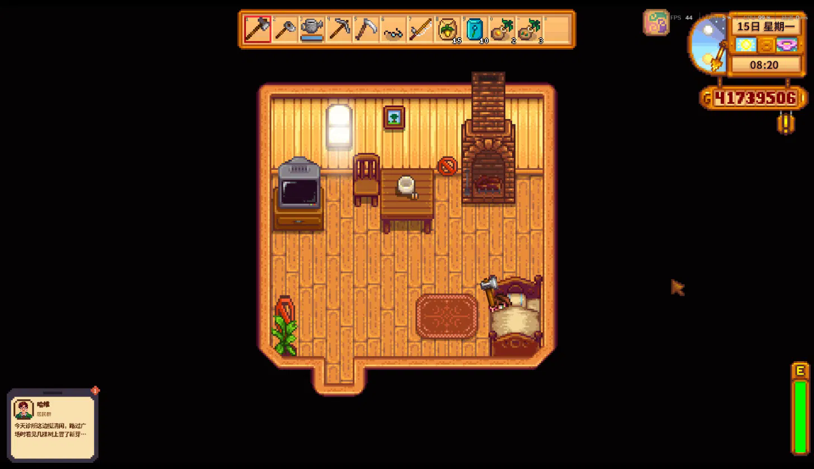
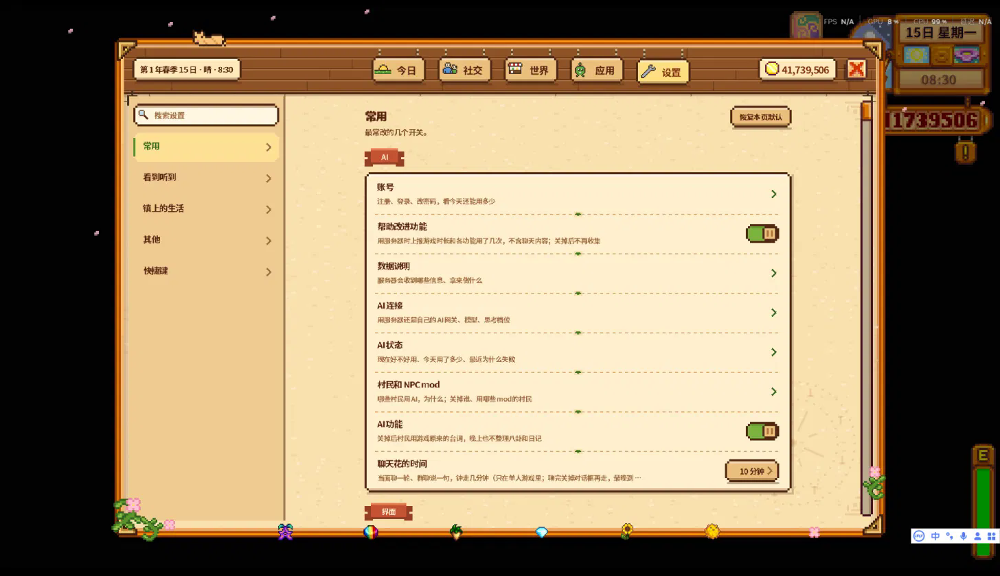
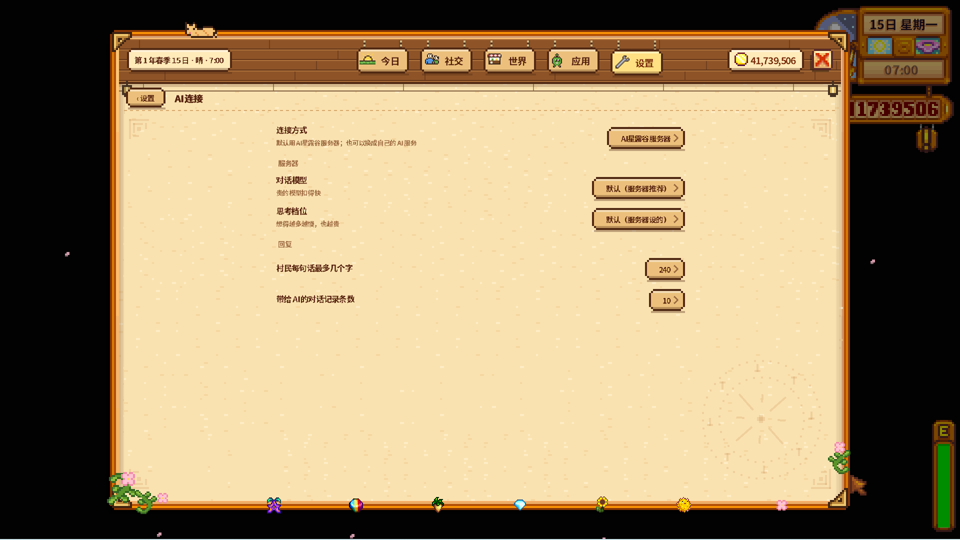
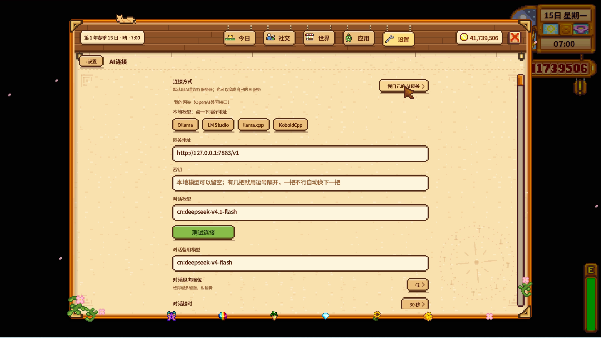
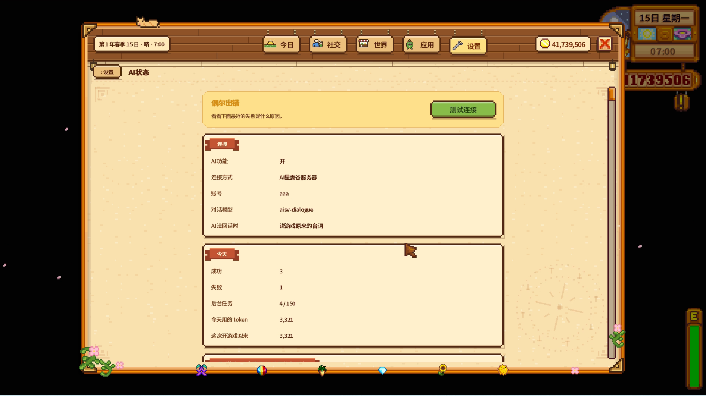

AI星露谷可以用你自己的 AI 服务，不必登录作者的服务器。接口要是 OpenAI 兼容 的 /chat/completions（DeepSeek、硅基流动、OpenRouter、Ollama、LM Studio、各种中转都行）。
准备三样东西：
启动带 SMAPI 的星露谷，标题画面点 加载，选一个存档。外壳（设置）要进了存档才能打开。



进游戏后按 F9。也可以打开背包，把手机拿在手上点一下。

顶栏切到 设置（扳手图标）。左边默认在 常用。

在「AI」那一组里点 AI 连接。旁边一行字写着：用服务器还是自己的 AI 网关、模型、思考档位。
进来以后，默认是作者的服务器：

点右边的 连接方式，改成 我自己的 AI 网关。下面会出现地址、密钥、模型，还有一个绿色的「测试连接」。
自己编译、没有内置服务器的版本，进这个页面就直接是网关表单，没有这一步切换。

截图里的 127.0.0.1:7863 是本机中转的例子。用云端 API 就改成下表里的地址。
三种写法都行，mod 会自己补全：
| 你填的 | 实际请求 |
|---|---|
https://api.deepseek.com |
…/v1/chat/completions |
https://api.deepseek.com/v1 |
…/v1/chat/completions |
https://api.deepseek.com/v1/chat/completions |
原样用 |
本地模型点上面那一排按钮，会自动填地址：
| 按钮 | 填进去的地址 |
|---|---|
| Ollama | http://127.0.0.1:11434/v1 |
| LM Studio | http://127.0.0.1:1234/v1 |
| llama.cpp | http://127.0.0.1:8080/v1 |
| KoboldCpp | http://127.0.0.1:5001/v1 |
云端 API 把 sk-… 贴进去。本地模型可以留空。有几把备用 key 就用英文逗号隔开，一把不行会换下一把。
密钥在界面里是打码的，离开这一页会写进 Mods/AIStardewValley/config.json。
填服务商控制台里的模型 ID，例如：
deepseek-chatgpt-4o-miniollama list 里的名字，比如 llama3.1cn:deepseek-v4.1-flash）把「网关地址」和「对话模型」换成你自己的即可。
| 服务 | 网关地址 | 模型举例 |
|---|---|---|
| DeepSeek | https://api.deepseek.com/v1 |
deepseek-chat |
| OpenAI | https://api.openai.com/v1 |
gpt-4o-mini |
| 硅基流动 | https://api.siliconflow.cn/v1 |
控制台里复制 |
| OpenRouter | https://openrouter.ai/api/v1 |
openai/gpt-4o-mini |
| 各类 New API / 中转 | https://你的域名/v1 |
后台的模型名 |
| Ollama | http://127.0.0.1:11434/v1 |
llama3.1 |
| LM Studio | http://127.0.0.1:1234/v1 |
软件里加载的那个 |
密钥走 Authorization: Bearer …，和官方 Chat Completions 一样。
三项填好后点绿色的 测试连接。mod 会发一句很短的话（「只回一个字：好」）。
测的时候按钮会变成「正在测试……」，等它结束。离开这一页，填过的内容会自动保存。
返回设置，点 AI 状态。

看这几项：
这里也可以再点一次「测试连接」。
换成自己的网关之后，不需要再登录 AI星露谷账号。设置里的「账号」页会写：现在用的是自己的 AI 网关，不需要账号。
同一页往下滚还有：
| 项 | 干什么 |
|---|---|
| 对话备用模型 | 主模型失败时按顺序换，逗号隔开，可以留空 |
| 对话思考档位 | 自动 / 不思考 / 低 / 中 / 高。想得越多越慢，也越贵 |
| 对话超时 | 默认 30 秒。本地大模型可以调到 90～180 |
| 后台模型 | 八卦、信件、晚上整理用的。留空就和对话模型一样 |
| 每天后台请求上限 | 只在自己的网关生效。0 = 不限 |
| 回复的输出 token 上限 | 回答被截断时再调高 |
| 把 AI 收发的全文写进日志 | 排查问题时再开，里面有存档里的对话和八卦 |
对话模型和备用加在一起最多用 3 个。
连不上 / 网络错误
先看地址对不对、服务有没有开。本地模型要先启动 Ollama / LM Studio，再点「测试连接」。
找不到模型
模型名必须和提供商后台完全一致，多一个空格都不行。
key 不认 / 没权限
换一把，或看这个 key 能不能调这个模型。
超时
把「对话超时」调长，或换更快的模型。思考档位先改成「不思考」或「低」。
村民突然说游戏原来的台词
连续几次网关都失败时，会暂时改说原台词，大约一分钟后再试。去「AI 状态」看最近的失败原因。
自己编译的版本没有「连接方式」
源码包没有 assets/connection.dat，只能填自己的网关，这是正常的。
也可以直接改 Mods/AIStardewValley/config.json：
"AiConnectionMode": "own",
"CustomLlmBaseUrl": "https://api.deepseek.com/v1",
"CustomLlmApiKey": "sk-你的密钥",
"CustomLlmModel": "deepseek-chat"
改完最好重启一次游戏。优先还是在游戏里填，可以当场测试。
AI星露谷 · 接入自己的 API · 实机截图教程